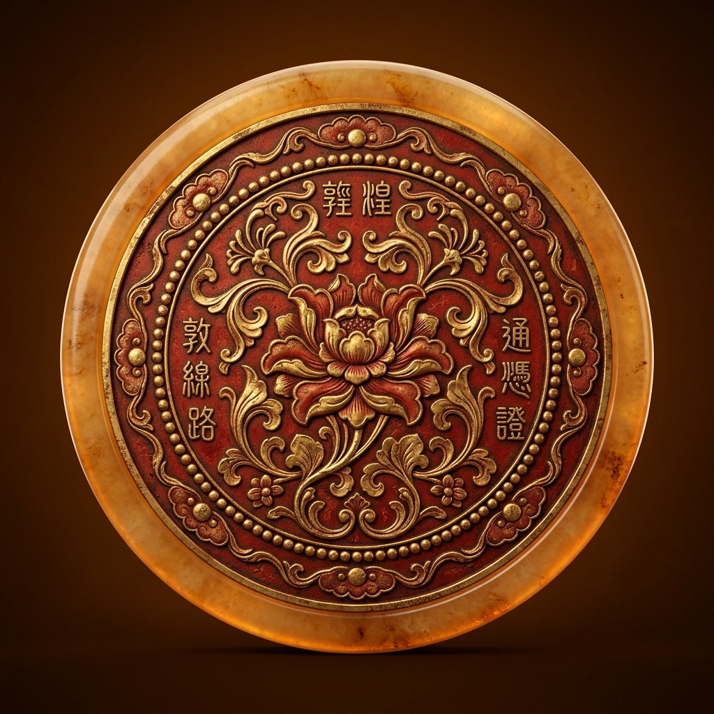

🚩 全队丝路行程进展
已打卡 0 / 9 天
9 天
行程周期
~2800 km
自驾总里程
3 省
甘·蒙·青
全部行程
D0 济南✈兰州
D1 兰州→张掖
D2 丹霞→鼎新
D3 航天城·胡杨
D4 嘉峪关→敦煌
D5 莫高窟·鸣沙山
D6 穿越柴达木
D7 茶卡·青海湖
D8 塔尔寺✈济南
丝路自驾全程轨迹总览
包含连霍高速G30、柴达木大穿越
✨
📍
🛰️
通行报备与重要预约提醒
🚀 东风航天城与鼎新基地（Day 3）特别纪律
1. 证件原件：所有人员必须随身携带二代身份证原件，严禁假借他人证件；
2. 拍摄限制：军事管制与涉密区域绝对严禁拍照、录像、飞无人机（航拍器建议放车内不携带）；
3. 报备车辆：考斯特车辆与司机身份必须已完成提前报备核验，听从随车向导统一指挥。
2. 拍摄限制：军事管制与涉密区域绝对严禁拍照、录像、飞无人机（航拍器建议放车内不携带）；
3. 报备车辆：考斯特车辆与司机身份必须已完成提前报备核验，听从随车向导统一指挥。
🎨 敦煌莫高窟 A类票抢票（Day 5）
莫高窟实行严格预约制，提前30天放票。首选包含两部高清球幕电影+8个实体洞窟的A类正常票（需按预约场次提前30分钟抵达数字展示中心）。
🏜️ 穿越柴达木无人区与高原温差（Day 6-7）
1. 戈壁物资：Day 6 穿越 650km 柴达木戈壁，车上备足 2 箱饮用水与高热量零食；离开敦煌前务必将考斯特加满油；
2. 高反与防晒：茶卡盐湖（3100m）、青海湖（3200m），备好红景天/散利痛。紫外线强烈，SPF50+防晒与墨镜不可离身。
2. 高反与防晒：茶卡盐湖（3100m）、青海湖（3200m），备好红景天/散利痛。紫外线强烈，SPF50+防晒与墨镜不可离身。
行前行李必备清单（支持打勾保存）
🪪 证件与贵重物资
🧥 穿戴与户外装备
💊 医疗与护肤防燥
考斯特团队公共 AA 记账器
团队公共总支出
¥ 0.00
同行分摊：
-
10
人
+
当前人均应付：¥ 0.00